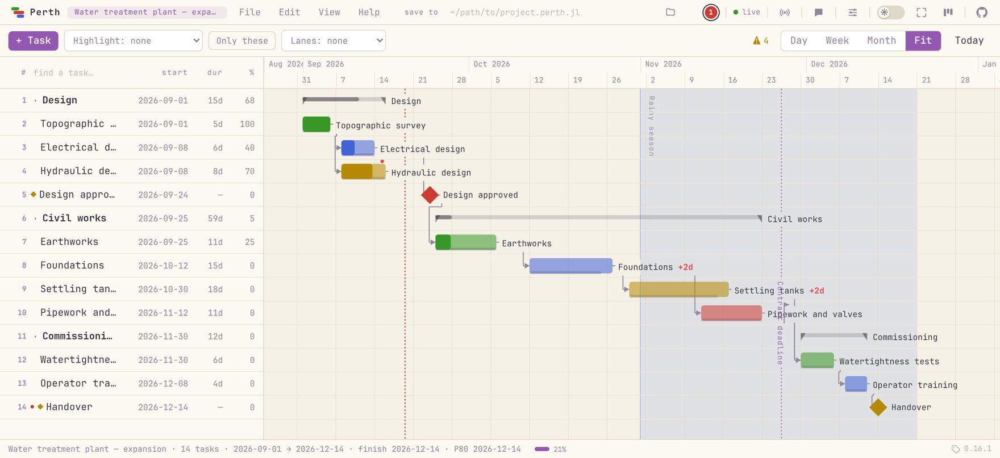
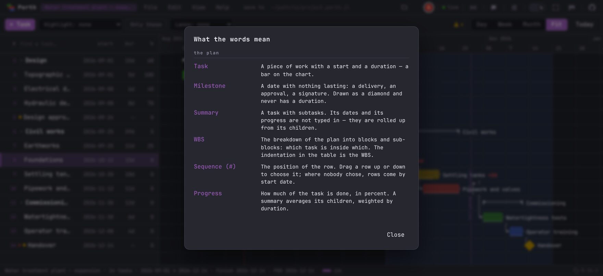
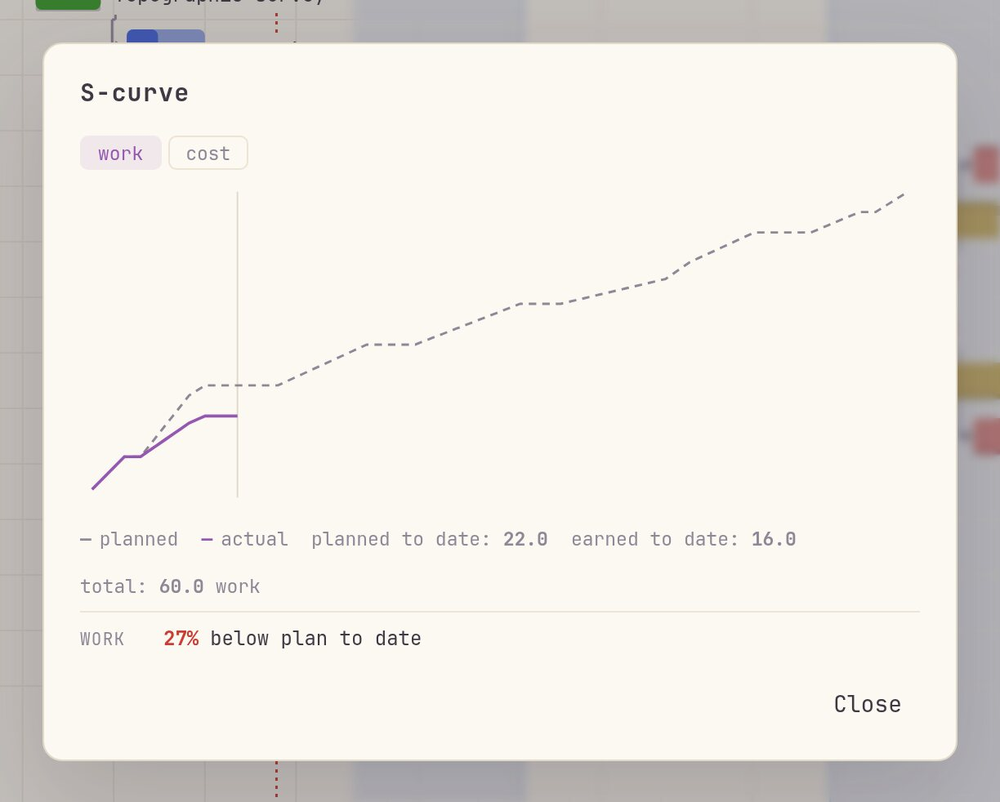
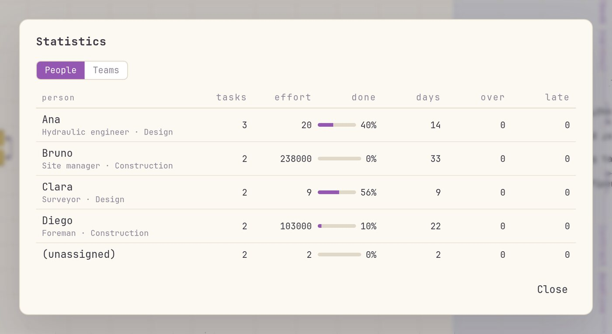
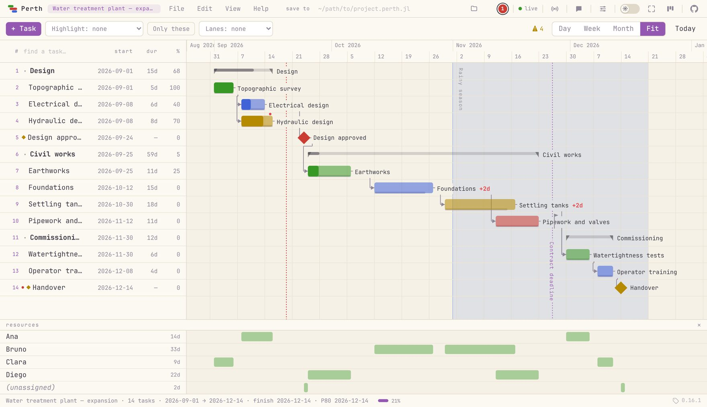
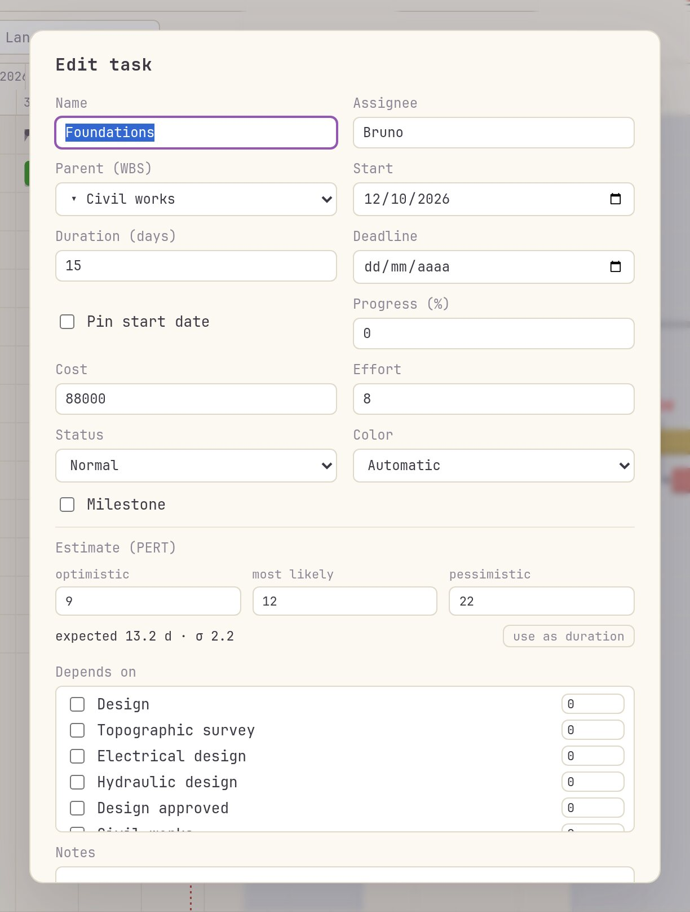
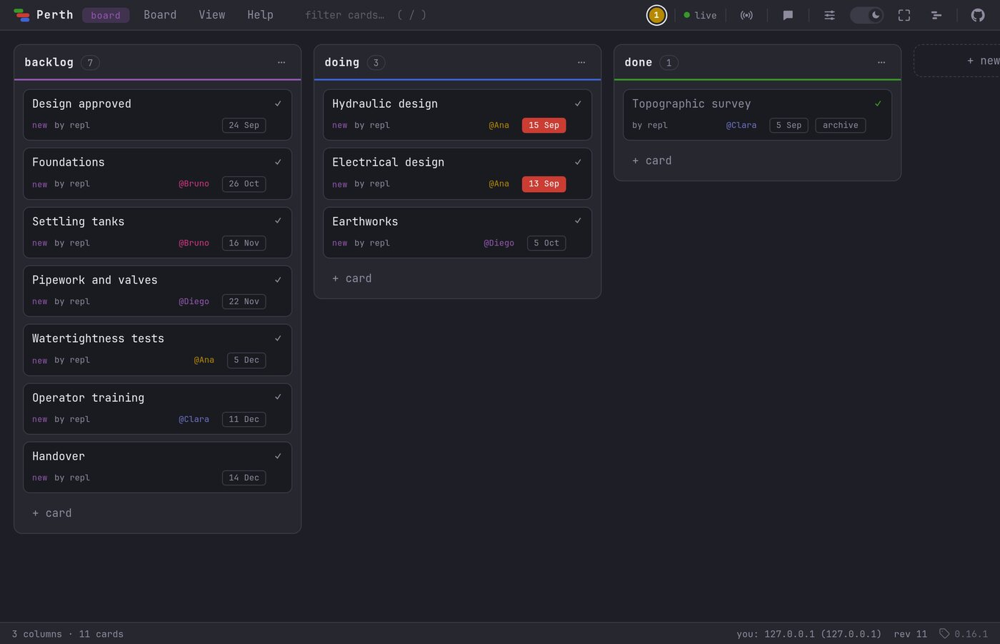

A Gantt chart and a kanban board served by your own Julia session. The model and the engine are ordinary Julia, so a plan is not a document you export from: it is something you compute with.
.perth.jl beside itjulia> using Perth
julia> Perth.run()
Perth running at http://localhost:8123
Localhost only — the REPL stays freeNo mock-up and no motion graphics: a screen recording of Perth serving a plan for a water treatment plant, driven by hand.
Everything the browser does is a call you can also make from the REPL — and the open page notices, and reloads on its own.
using Perth
p = create_project("Water treatment plant — expansion")
survey = add_task!(p, "Topographic survey"; start = Date(2026, 9, 1),
duration = 5, assignee = "Clara", progress = 100)
design = add_task!(p, "Hydraulic design"; start = Date(2026, 9, 8),
duration = 8, assignee = "Ana",
dependencies = [survey.id],
notes = "Check **NBR 12216** before sizing.")
# a commitment, not a plan: a deadline never moves the task,
# it turns the slack negative
add_task!(p, "Pipework and valves"; start = Date(2026, 11, 12),
duration = 10, deadline = Date(2026, 11, 26))
schedule!(p) # CPM: successors to their earliest date
critical_path(p) # the chain with no slack
tasks(p) # Tables.jl rows — straight into a DataFrame
Perth.run() # and now look at itBecause the browser is only one of the views. A schedule that lives in a spreadsheet cannot be joined against your measurements, and a desktop Gantt makes you export first.
using DataFrames
df = DataFrame(tasks(p))
combine(groupby(df, :assignee), :duration => sum => :days)
# the schedule reacts to your data, not the other way round
for row in eachrow(measurements)
update_task!(p, row.id; progress = row.done_pct)
end
schedule!(p)project(id) hands you
what the UI just saved, while p still holds what it held when you assigned it.Drag a bar to move a task, its right edge to resize, and between two bars to link them. Drag a row into the gap to reorder, or onto a task to make it a subtask — one gesture, two destinations.

**bold**,
`code`, ~~strike~~ and links
Progress against the baseline, work against capacity, and the warnings a plan earns — each one a panel in the browser and a function in the REPL.


people_stats and team_stats return the same rows.
add_person!(p, "Ana"; capacity = 8) — and an overload stops being
two tasks on the same day and becomes more work than the day holds.
level! then delays what has slack, least slack last, until nobody is over.Dependency cycle · past deadline · overdue · overallocation · over capacity · behind the baseline · starts before its dependencies allow.
Help → What the words mean: slack, critical path, baseline, bottleneck, P80 — in the words of someone who has to explain them at a site meeting.
Project (.perth.jl), tasks (CSV), milestones and deadlines (iCalendar), the
chart (PNG), or a static figure through Makie. And CSV walks back in.
Give three. PERT turns optimistic, most likely and pessimistic into an expected duration and a spread — and the estimates never move anything until you say so.

set_estimate!(p, foundations.id, 9, 12, 22)
pert(p) # expected duration and σ, per task
pert_finish(p) # finish: expected, σ, P10/P50/P80/P90
finish_probability(p, Date(2026, 12, 10))
pert_date(p, 0.8) # right four times out of five
pert!(p) # apply (o + 4m + p)/6 as the durationAnalytic PERT assumes one critical chain. When several chains are nearly the same length, whichever runs late becomes critical, and the finish drifts later than any formula predicts.
sim = pert_simulate(p; n = 10_000)
sim.p80 # the date that survives 80% of the futuresThe gap between
pert_finish(p).p80 and sim.p80 is the cost of pretending there is
only one critical path.
Perth.kanban() starts a second, independent app on port 8150. WebSocket-authoritative
end to end: every change is broadcast live, and each machine shows up as a labelled cursor
anchored to a card, not to a pixel — so it survives different window sizes and zoom levels.
#tags, **markdown**, checklists, due dates, assignees, per-column
WIP limits and an archive. A card also opens as a document — a description with lists and
fenced code blocks, and screenshots pasted straight in with Ctrl+V,
shrunk in the browser and stored by content, so the same picture pasted five times is one
file.
kanban_from_project!(p) # a plan becomes cards
kanban_add_card!("backlog", "Ship v1.0")
kanban_move_card!(id, "doing")
kanban_alias!("192.168.0.23", "Paulo") # a name for a machine
kanban_cards() |> DataFrame # (column, id, text) rows
Each project is a JSON file under ~/.perth. JSON is the machine format;
.perth.jl is the interchange format for humans and version control.
Perth.load uses a restricted parser, not eval: only
Project, GanttTask, Person, Band,
Marker, MonthMark, Date and DateTime may
be constructed. Any other call is refused.
Perth.save(p, "plans/plant.perth.jl") # readable, diffable
q = Perth.load("plans/plant.perth.jl")
set_file_path!(p, "plans/plant.perth.jl") # mirror on every save1,882 tests in Julia (Pkg.test()) for the model and the engine; 777 checks in
jsdom for DOM logic; and 40 in a real headless Chrome for geometry, event chains and overlap
measurement — because a field that changed width while you typed, and a double click that
never became a double click, both walked past jsdom without failing.
using Pkg
Pkg.add("Perth")
using Perth
Perth.run() # http://localhost:8123 — the REPL stays free
Perth.kanban() # http://localhost:8150 — a board of its ownusing Perth says so when a newer release is out — one
dim line under the entry-point hint, read from the package registry already on your
machine, with no network request of any kind.
Load them before Perth.run().
set_calendar!(p, "Brazil"), so weekends and holidays stop countingganttplot and
save_chart for static figureslevel! is a heuristic, because the optimum is NP-hard.